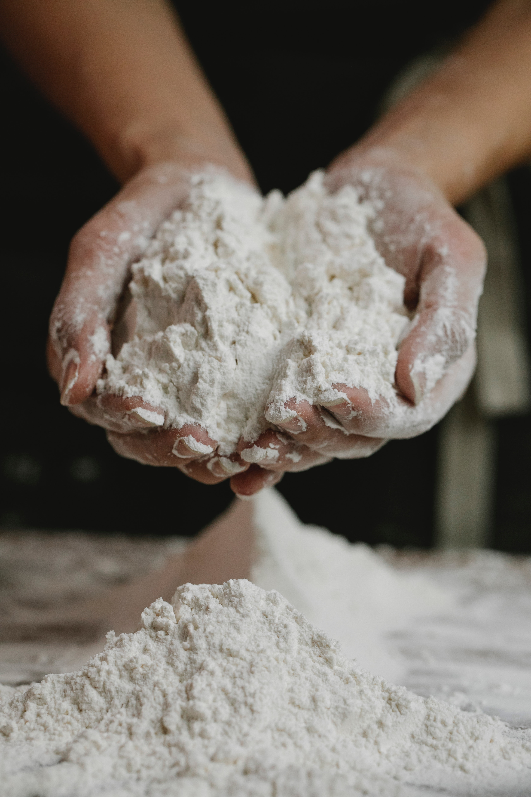
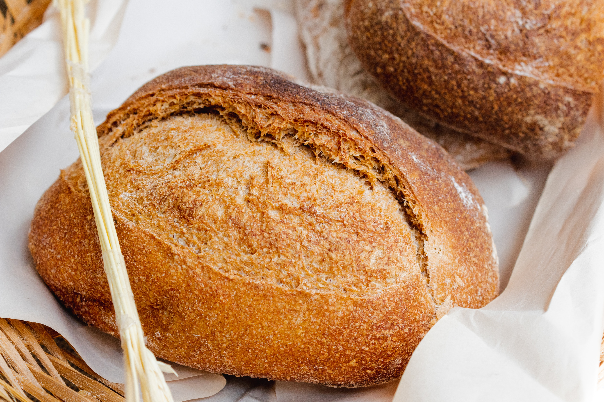

We start with only the highest quality of orgainic wheat to

We finely grind the wheat in our mills by hand. It takes incredibly strong hands, but we do it for you.

We guarentee that the dough made with our flour is 100% good stuff! Unless you suck at making dough, in which case...

You can also buy bread and bread products from us! But with our flour, you will be able to make gorgeous loaves like these.